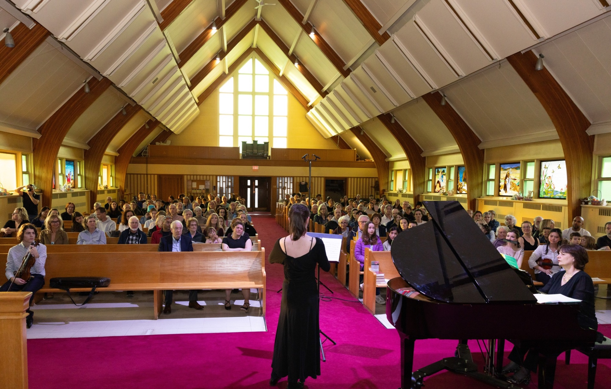
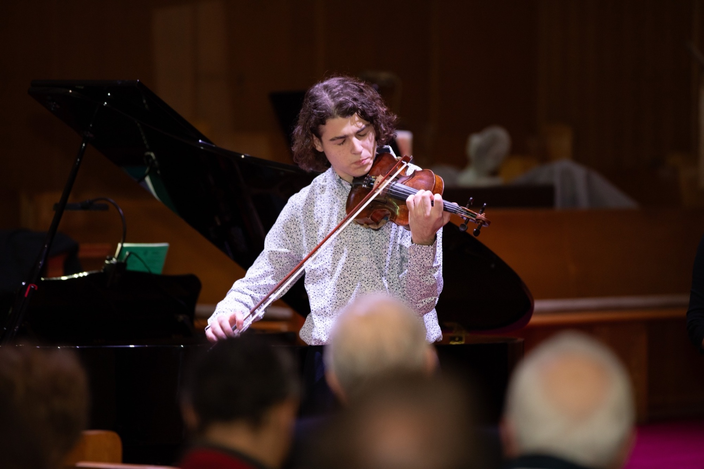
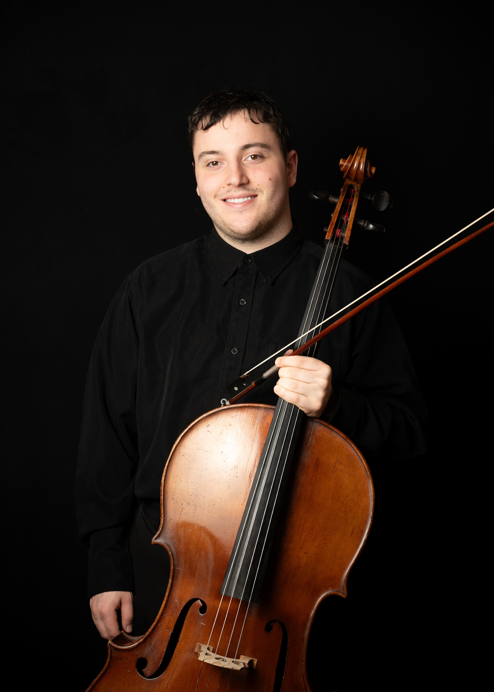
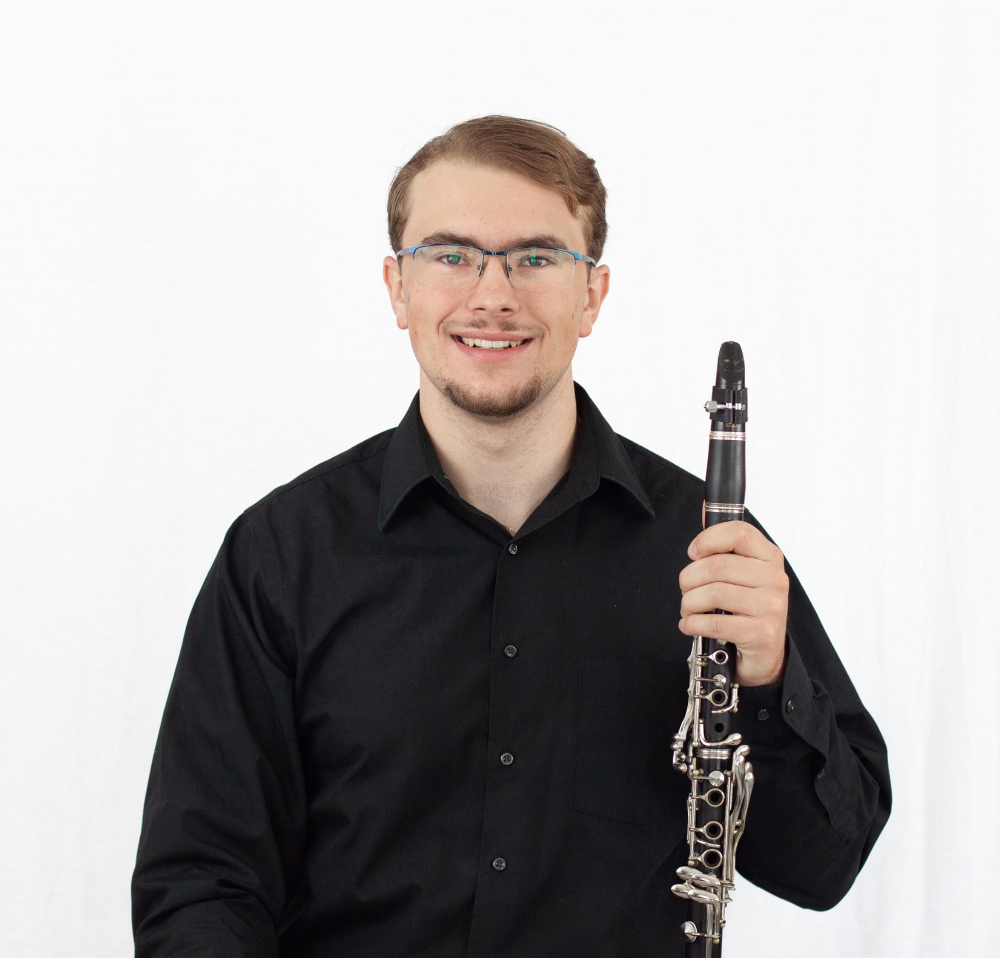
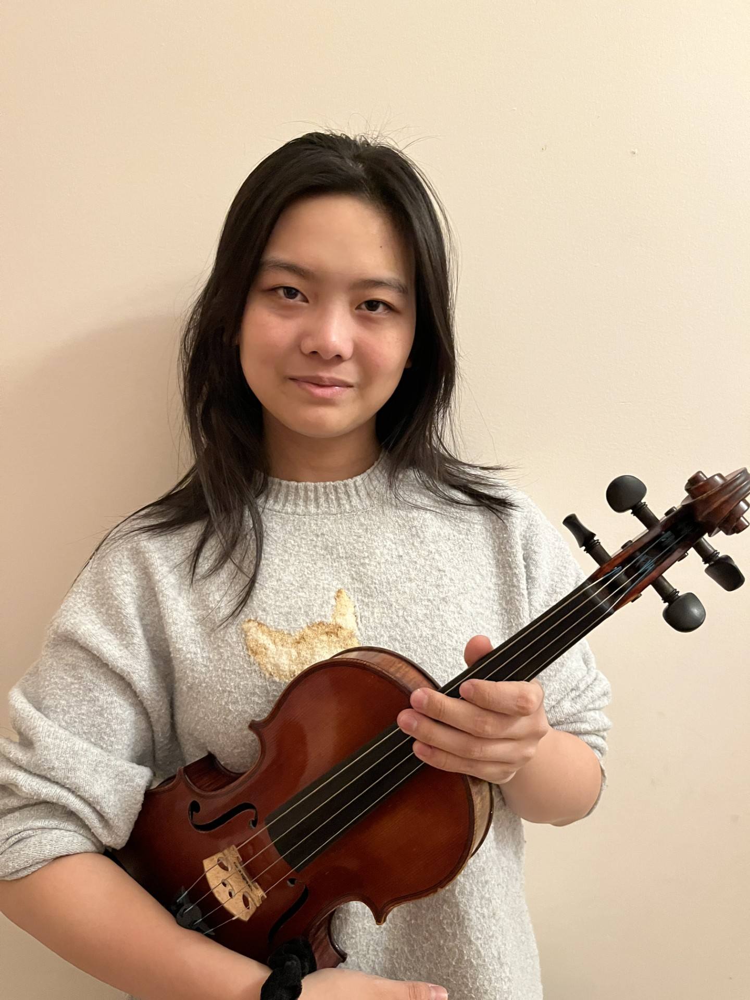
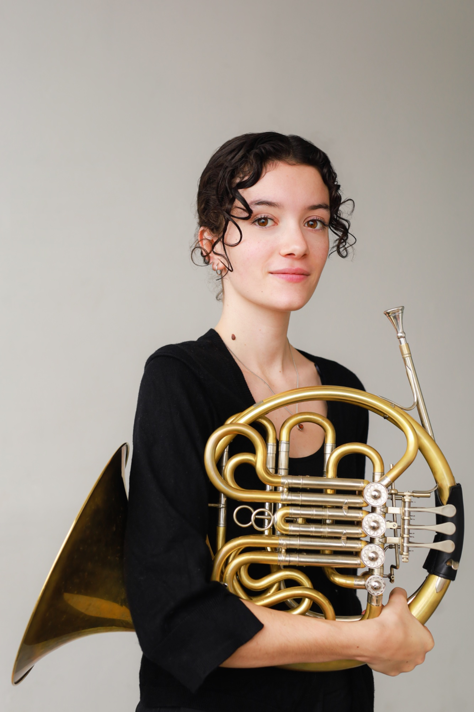
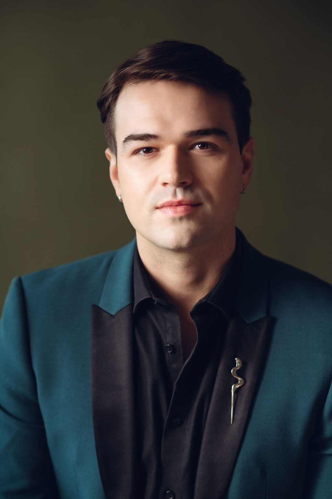

Montréal · 30 mai 2026
Musique classique. Tombola. Émotion.

Notre histoire
« La musique peut nommer ce qui est indicible et communiquer ce que les mots laissent muet. »
Né d'une conviction simple — que la beauté peut alléger la douleur — ce concert rassemble chaque année des musiciens talentueux pour offrir une soirée inoubliable au profit des enfants qui se battent contre le cancer.
Chaque billet vendu, chaque lot de tombola tiré, chaque note jouée contribue directement à améliorer leur quotidien.
Le survivant
Jeune, une tumeur de la taille d'une clémentine s'est développée à l'intérieur de son cerveau. Grâce au personnel de l'Hôpital pour enfants de Montréal, il a su surmonter la douleur. Armé de son violon, la musique l'a aidé à combattre, à sourire et à ne pas baisser les bras.
Maintenant, c'est à son tour de redonner. De transmettre la joie, la douceur et une bonne grosse dose de résilience à tous ceux qui, comme lui, ont une bataille à mener.

Une soirée, trois expériences
Des œuvres magistrales interprétées par des musiciens passionnés dans le cadre intimiste de l'Église Unie Valois.
Des prix généreux offerts par des partenaires locaux. Chaque billet de tombola va directement aux enfants malades.
Une soirée qui touche le cœur, unit les gens et rappelle ce qui compte vraiment. On ne repart jamais indifférent.
Les artistes
Des musiciens talentueux réunis pour redonner à l’hôpital qui a sauvé la vie de Léandre. Les profits vont au département d’Oncologie de l’Hôpital de Montréal pour enfants.





Le compte à rebours a commencé